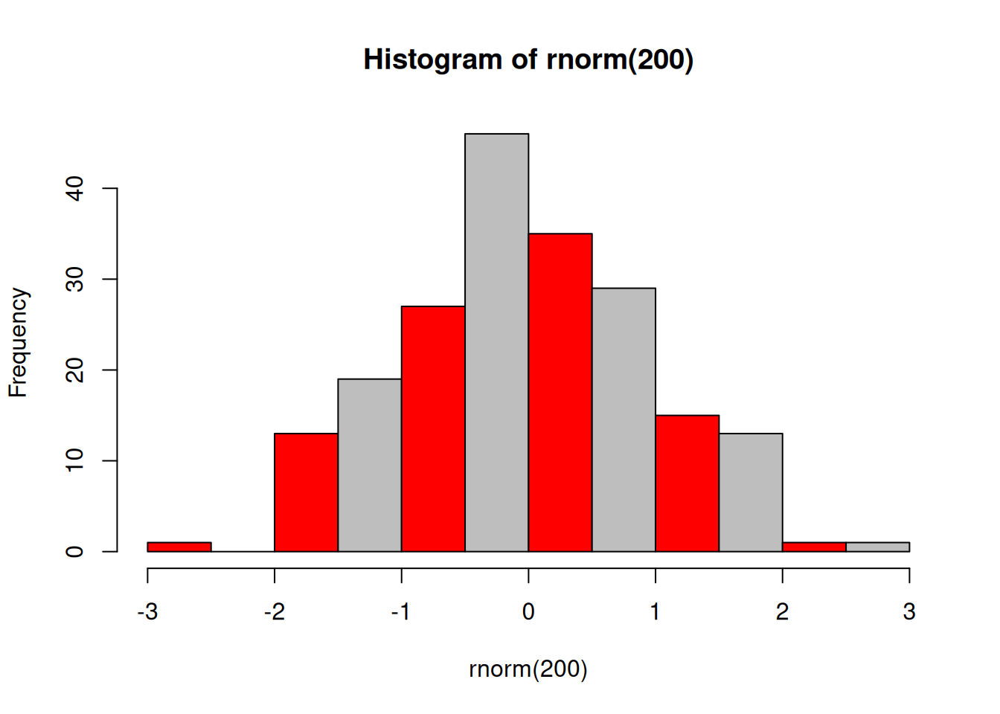

Chapter 6 Basics of R syntax
(Simple commands and basic syntax, operators, variables, class, mode, and attributes)
6.1 Overview
6.1.1 Abstract:
This unit discusses simple R commands and basic syntax, operators, and R objects (variables).
6.1.2 Objectives:
This unit will:
- introduce basic operations of R syntax;
- provide examples for use of operators;
- discuss variable names.
6.1.3 Outcomes:
After working through this unit you:
- can evaluate R expressions by typing them on the console;
- know how to write and debug complex R expressions that are deeply nested with parentheses;
- are able to avoid common issues when choosing variable names.
6.1.4 Deliverables:
Time management: Before you begin, estimate how long it will take you to complete this unit. Then, record in your course journal: the number of hours you estimated, the number of hours you worked on the unit, and the amount of time that passed between start and completion of this unit.
Journal: Document your progress in your Course Journal. Some tasks may ask you to include specific items in your journal. Don’t overlook these.
Insights: If you find something particularly noteworthy about this unit, make a note in your insights! page.
6.2 Simple commands
The R command line evaluates expressions. Expressions can contain constants, variables, operators and functions of the various datatypes that R recognizes.
6.3 Task 11
- Open an RStudio session and try the following operators on numbers:
5
5 + 3
5 + 1 / 2 # Think first: is this 3 or 5.5
3 * 2 + 1
3 * (2 + 1)
2^3 # Exponentiation
8 ^ (1/3) # Third root via exponentiation
7 %% 2 # Modulo operation (remainder of integer division)
7 %/% 2 # Integer division
# Logical operators return TRUE or FALSE
# Unary:
TRUE
FALSE
! TRUE # read carefully: the "!" (meaning "not") is easily overlooked
! FALSE
# Binary operators
1 == 2
1 != 2
1 < 2
1 > 2
1 > 1
1 >= 1
1 < 1
1 <= 1
# & (means AND)
TRUE & TRUE
TRUE & FALSE
FALSE & FALSE
# | (means OR)
TRUE | TRUE
TRUE | FALSE
FALSE | FALSE
# Predict what this will return
!(FALSE | (! FALSE))Given the expression shown below, the value of lastNum is 9:
numbers <- c(16, 20, 3, 5, 9)
numbers
lastNum <- tail(numbers, 1) # explain what this does
lastNum
# Note: expressions in parentheses:
# when we assign, e.g. ...
numbers <- sample(1:20, 5)
# ... we can get the value of the vector "numbers" with ...
print(numbers)
# ... or just ...
numbers
# But we can also put the entire expression in parentheses, and when it is
# evaluated, which results in the assignment, the value is also printed.
(numbers <- sample(1:20, 5))
# so: when you see parentheses around an entire expression, remember that all
# the parentheses do is to perform some evaluation, and then print the
# resulting object. I use this idiom lot for compactness in teaching code.
# In general, you usually don't need this in scripts that you develop, but for
# teaching I often need you to study the contents of a variable.6.4 Task 12
Write R expressions for the following:
- To check whether lastNum is less than 6 or greater than 10 11
- To check whether lastNum is in the interval [10, 20). (By the rules of mathematical notation this means 10 is included but 20 is not).12
- To output TRUE if the following operation gives 213:
* take lastNum
* divide it by 7
* subtract the integer part and the first digit after the decimal point (hint: multiply by 10, then integer division by 1 gives you ... what)
* multiply by 100
* integer divide by 1
* take the third root(Hints: use lots of parentheses and compare the final result to 2. To debug, select parts of the code and execute separately. If the console gets stuck because it is expecting a closing parenthesis, and all you see is the “+” sign, simply press
6.5 Variables
In order to store the results of expressions and computations, you can freely assign them to variables14. Variables are created by R whenever you first use them (i.e. space in memory is allocated to the variable and a value is stored in that space.) Variable names distinguish between upper case and lower case letters. There are a small number of reserved names that you are not allowed to redefine, and R syntax contains very small number of predefined constants, such as pi. However these constants can be overwritten - be careful: R will allow you to define pi <- 3 but casually redefining the foundations of mathematics may lead to unintended consequences. Read more about variable names at:
To assign a value to a constant, use the assignment operator <-. This is the default way of assigning values in R. You could also use the = sign, but there are subtle differences. (See: ?“<-”). There is a variant of the assignment operator <<- which is sometimes used inside functions. It assigns to a global context. This is possible, but not preferred since it generates a side effect of a function. Don’t do this. Just forget that <<- even exists.
## [1] 5## [1] 8## [1] 8## [1] 13## [1] FALSE## [1] TRUE## [1] TRUENote that all of R’s data types (as well as functions and other objects) can be assigned to variables.
There are very few syntactic restrictions on variable names (discussed eg. here) but this does not mean esoteric names are good. For the sake of your sanity, use names that express the meaning of the variable, and that are unique. Many R developers use dotted.variable.names, some people use the pothole_style, my personal preference is to write camelCaseNames. And while the single letters c f n s Q are syntactically valid variable names, they coincide with commands for the debugger browser and will execute debugger commands, rather than displaying variable values when you are debugging. Finally, try not to use variable names that are the same as parameter names in functions. Alas, you see this often in code, but such code can be hard to read because the semantics of the actual argument versus the parameter name becomes obscured. It’s just common sense really: don’t call different things by the same name.


6.7 Further reading, links and resources
If in doubt, ask!
If anything about this learning unit is not clear to you, do not proceed blindly but ask for clarification. Post your question on the course mailing list: others are likely to have similar problems. Or send an email to your instructor.
Author: Boris Steipe boris.steipe@utoronto.ca
Created: 2017-08-05
Modified: 2018-05-04
Version: 1.0.1
Version history:
1.0.1 Maintenance
1.0 Completed to first live version
0.1 Material collected from previous tutorial